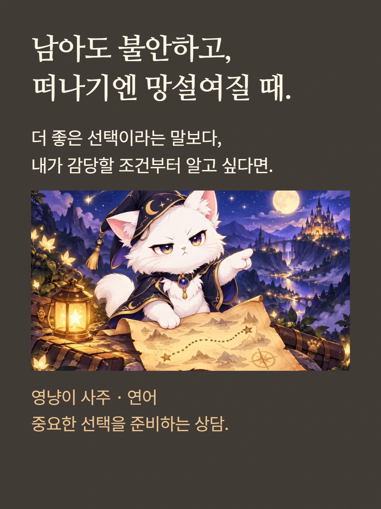
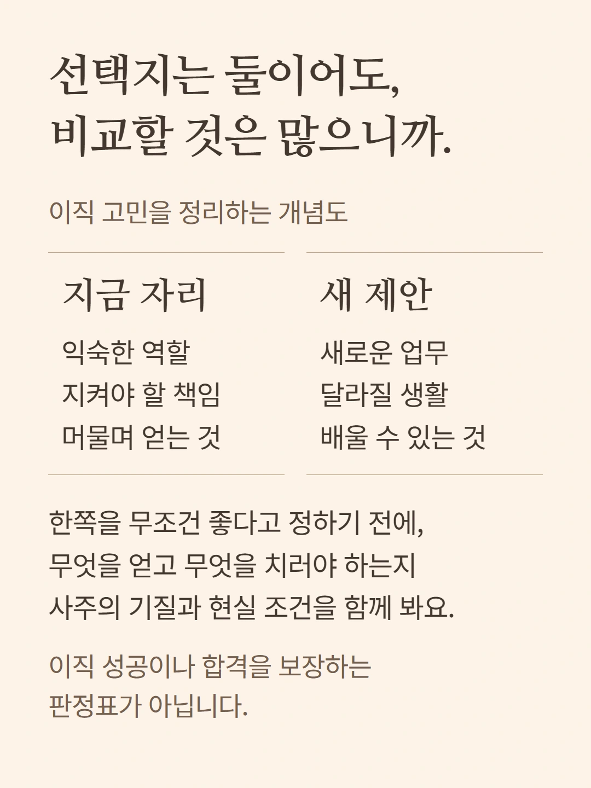
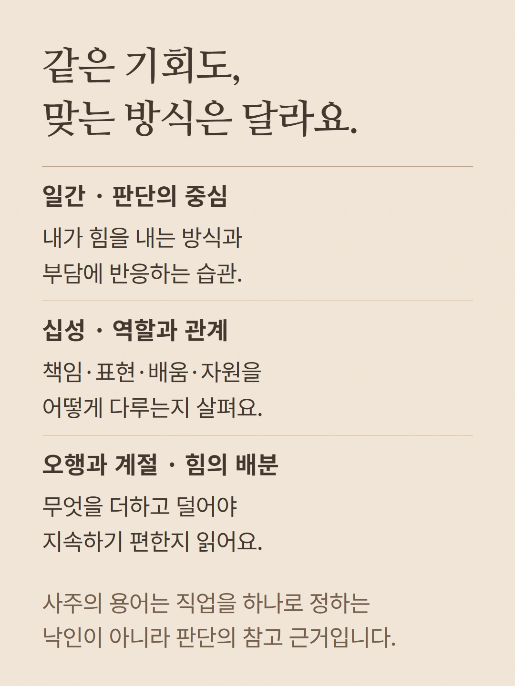
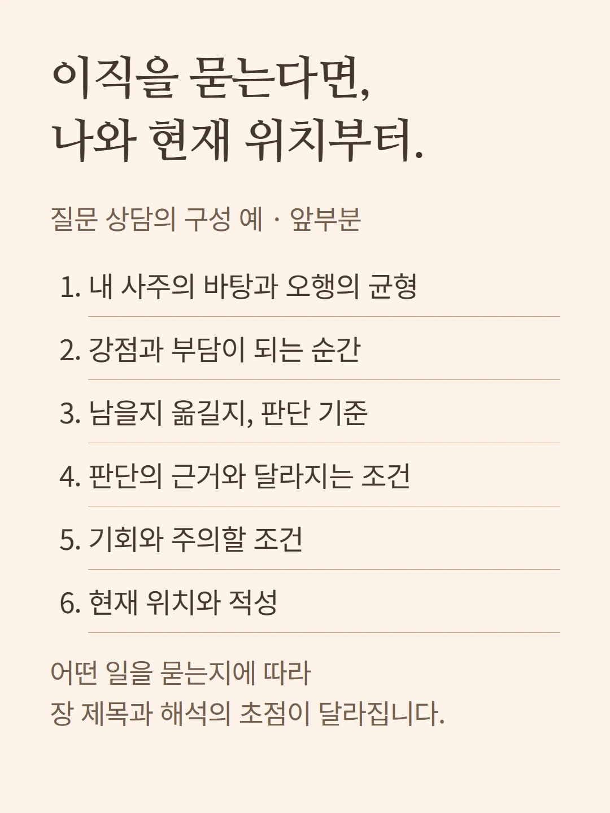
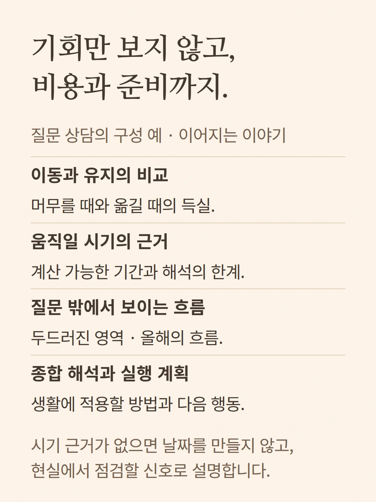
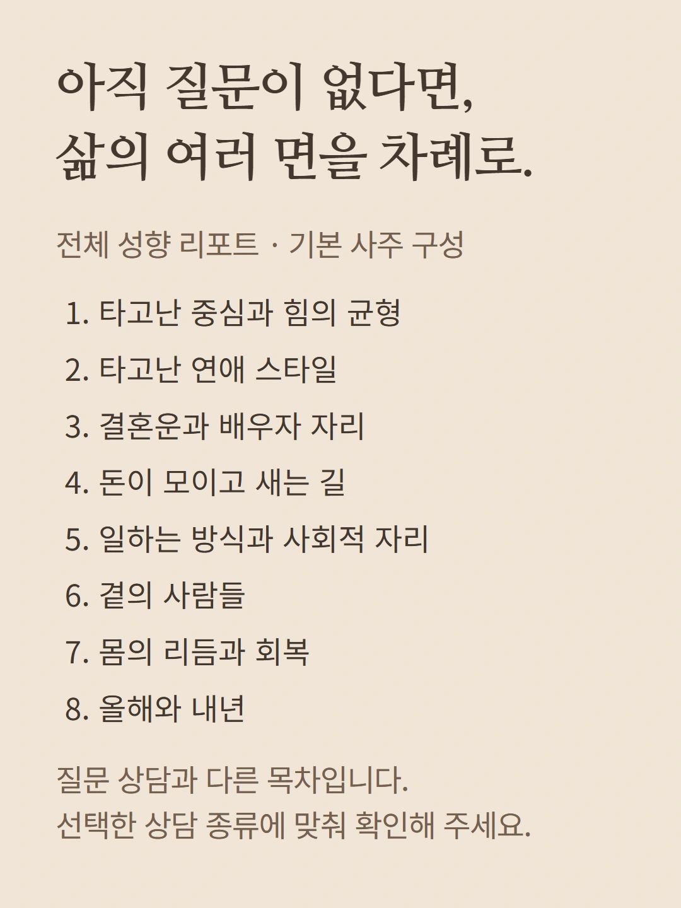
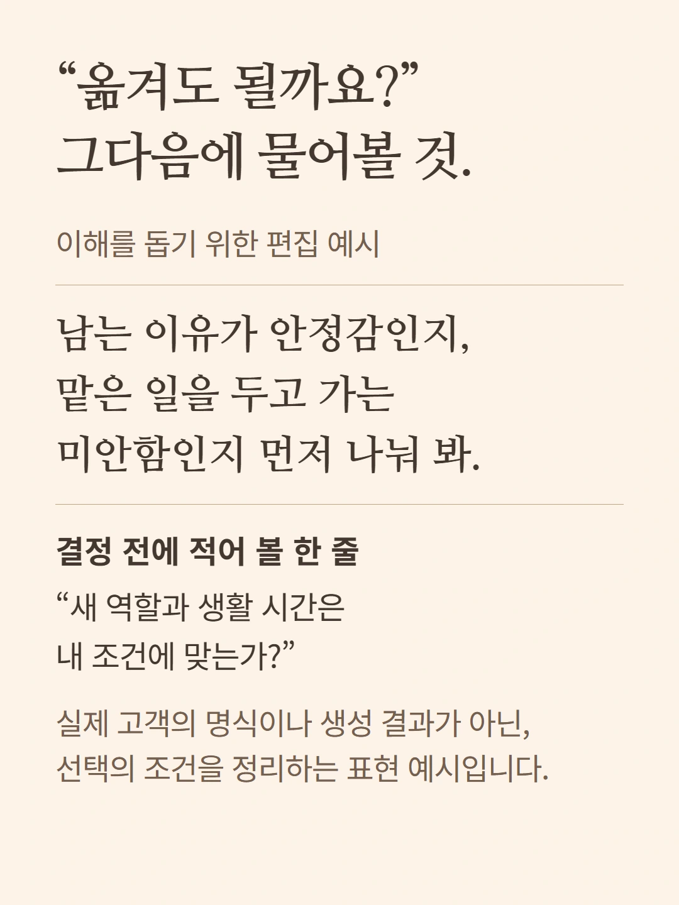
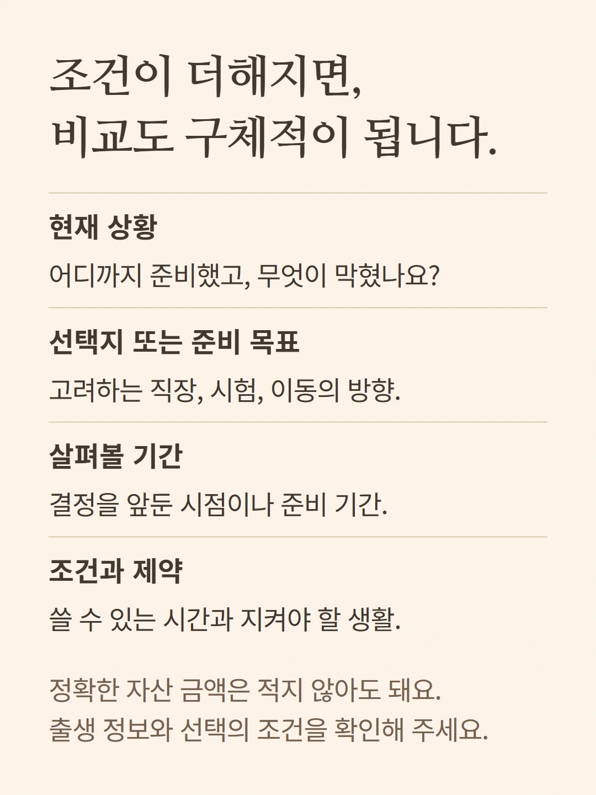
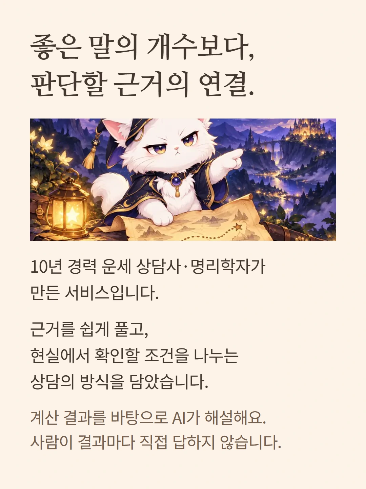
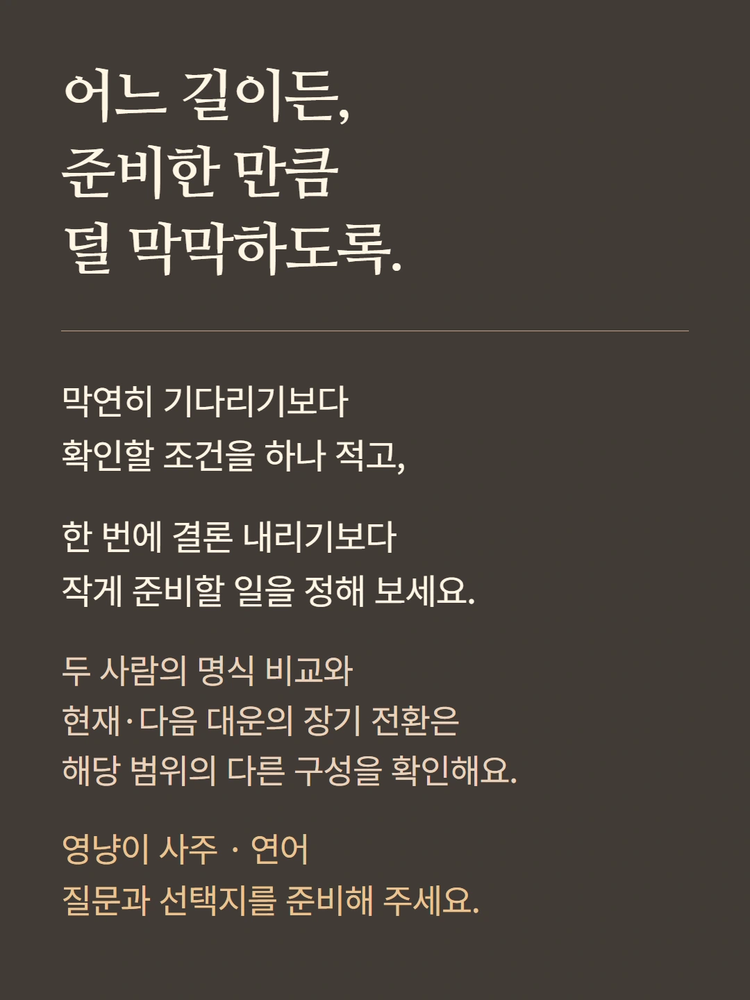

로컬 편집 미리보기. 실제 화면은 mobile.json 및 legacy/question 캡처를 참조하세요.










아래 이직 사례와 도식은 이해를 돕기 위한 편집 예시입니다. 실제 고객 결과가 아닙니다. 질문 상담의 목차는 주제와 입력 조건에 따라 달라지며, 전체 성향 리포트는 별도 선택 흐름입니다. 가격과 추가 질문 조건은 기존 상담 준비 화면에서 확인해 주세요.